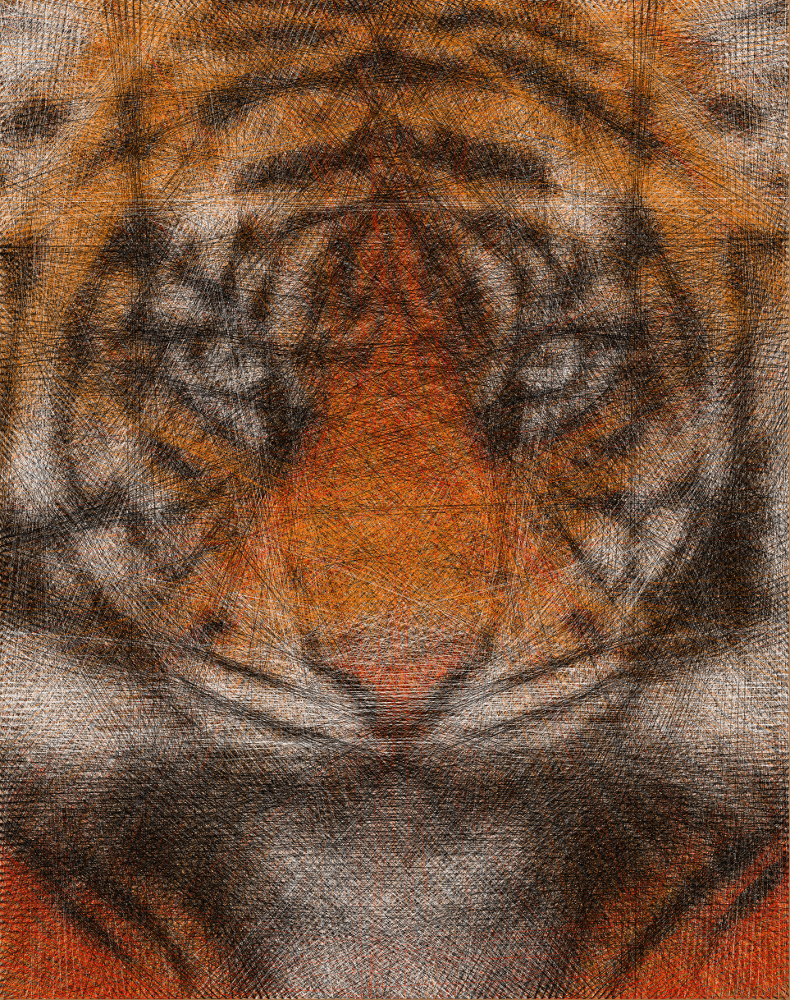
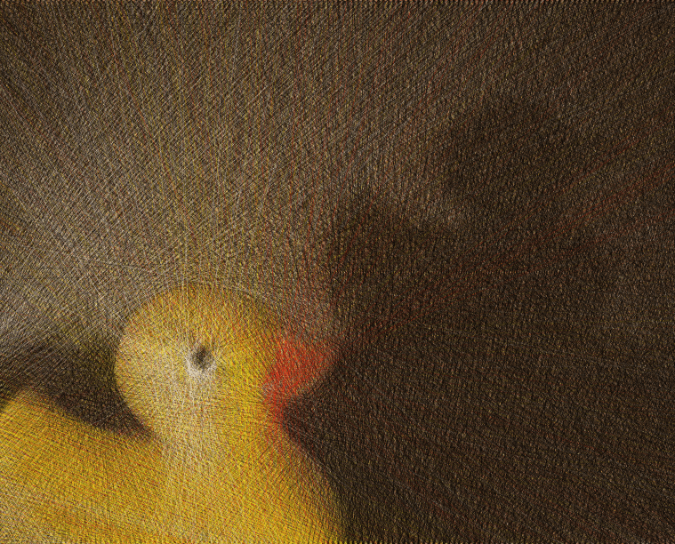
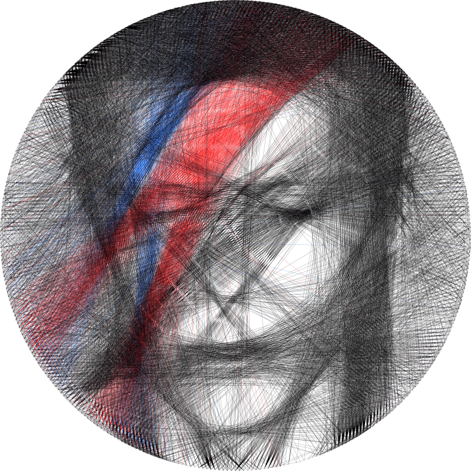
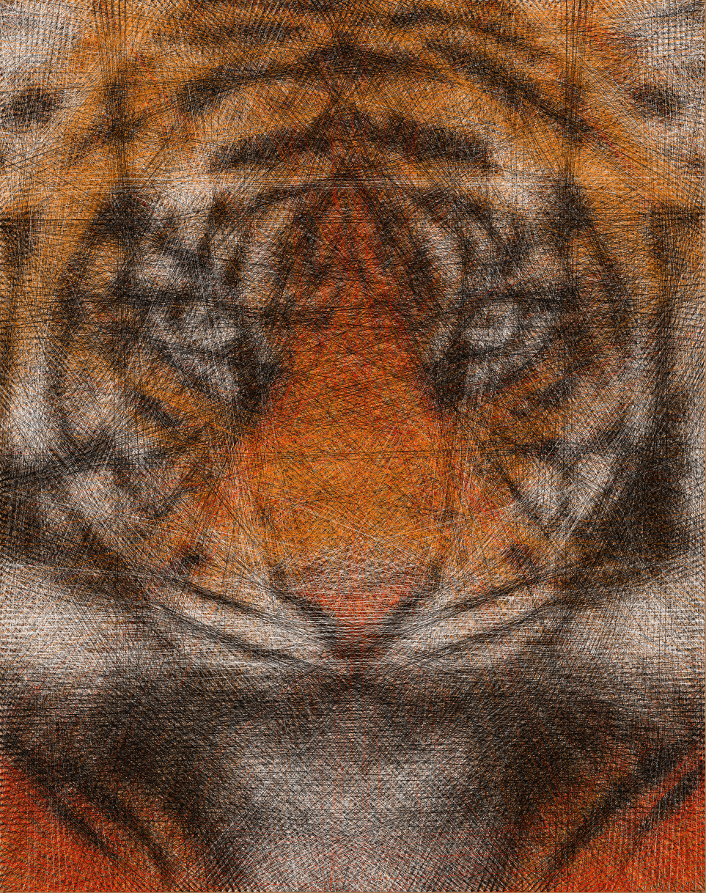
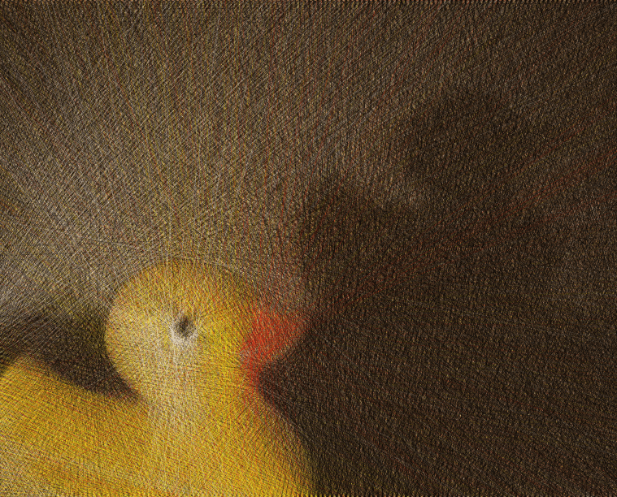
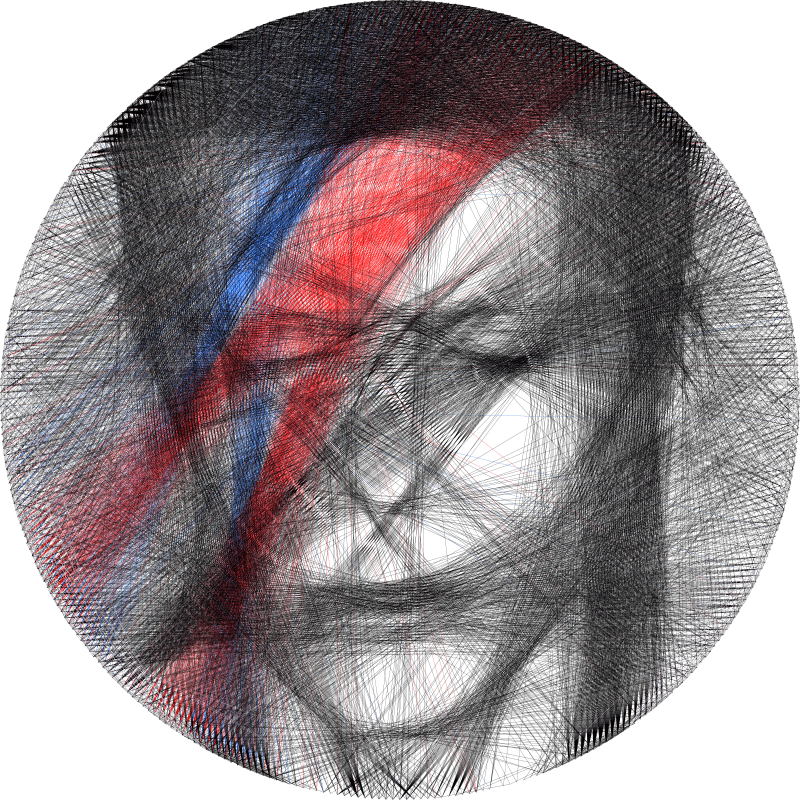

Hello!
This is my blog, which I use to talk about things that interest me.
I am one or more of the following:
AI Safety Researcher,
Film & Music Enjoyer,
Fudge Baker,
Thread-Art Maker,
Hitchhiker's Guide To The Galaxy Fan,
Occasional Runner,
Clothespeg Carrier,
Amateur Front-End Developer,
Bad Pun-Maker,
Binge-Watcher of MasterChef Canada.
In 2022 I finished my Maths Masters at Cambridge, and after that co-ran 3 iterations of ARENA. In 2024 I started a full-time role at Anthropic doing interpretability research (working in their London office).
You can contact me at cal.s.mcdougall@gmail.com, or here. For the weird fun experimental version of my blog, click here.
Life Threads
Here's an illustration of some of major life events from the last few years. The line is my level of anxiety during this time, the pie charts at the top show how my career goals have changed, plus I've annotated the points where I've picked up a new hobby or interest. Hover your mouse to see the text zoomed-in.
Note, I recommend viewing this on a large screen, otherwise it can be kinda annoying!
Sparse Autoencoder Visualisation
I'm working on an open-source viewer for investigating the learned features of sparse autoencoders, based on Anthropic's recent work. It provides similar functionality to Anthropic's viewer, although with the added ability to take user-defined prompts and highlight the most important features (by one of a few different metrics).
Click here to view one which is based on Neel Nanda's GELU-1l model.
My writing
My Research / Projects
Sparse Autoencoder Visualisation (Anthropic replication)Mechanistic Interpretability
Monthly Algorithmic Challenge (January 2024): Caesar CipherOpen-Source Code
Einops-inspired indexingAI Safety (general)
MIRI Conversations: Technology Forecasting & GradualismA Little About Me
My Favourite FilmsMaths
What to study - a fourth optionProductivity & Learning
The joys of using PlotlyMy CV
Experience
ARENA (Alignment Research Engineer Accelerator) | Cofounder
- Founded & ran the first and second iterations of ARENA (with Kathryn O'Rourke as head of operations)
- Acted as head TA and curriculum designer for the majority of the program
- Main roles included:
- Assisting participants with conceptual and engineering questions
- Structuring the micro and macro-level details of the curriculum
- Giving several talks and organizing group discussions
- Providing feedback and advice to groups while they were working on capstone projects
- Created materials for people studying the program virtually, including a monthly series of mechanistic interpretability challenges
- Designed our public-facing website here, and the website for hosting the curriculum here (which now has over 2000 unique visitors)
SERI MATS | Scholar
- Accepted into Neel Nanda's Mechanistic Interpretability SERI MATS stream with Arthur Conmy, studying negative attention heads in GPT2-Small
- Developed a form of ablation which demonstrates that a particular mechanism (copy suppression) explains the majority of head L10H7's behaviour in GPT2-Small, and reoccurs as a motif in larger models
- Wrote a paper on which I will be first author (a draft will be available on 27th October)
MLAB | Participant
- Attended MLAB (Machine Learning For Alignment Bootcamp), run by Redwood Research
- Created Anki flashcards to summarise the material studied during the bootcamp (TODO - link to flashcards)
AI Safety Camp | Participant
- Working in a team of three, researching selection for modularity in evolved systems & modern deep learning
- Have given several summary talks on our team's progress
- Link to LessWrong sequence can be found here
SERI MATS | Scholar
- Attended weekly discussions with Evan Hubinger to discuss his research agenda, and his views on alignment
- Wrote up a distillation of John Wentworth's Natural Abstraction Hypothesis, linking it to other topics such as interpretability research and neuroscience (link here)
- This distillation was featured for a time as part of the AGISF 201 course
Cambridge Existential Risks Initiative | Committee member
- Designed syllabus & organised an introductory course on existential risks (ERIC)
- Gave Q&A on AI Safety at the CERI 2021 retreat
- Co-lead a reading group on Human Compatible: Artificial Intelligence and the Problem of Control
Jane Street Capital | Quantitative Trading Intern
- Participated in team-based mock trading sessions
- Developed methods for interactive visualisation of the results of a Gradient Boosted Tree in Python
- Received a full-time offer as a trader
Effective Altruism, Cambridge | Faciliator
- Facilitated the Effective Altruism Introductory Fellowship for two groups of Cambridge residents
- Helped to promote discussion of important topics, and helped fellows to engage with ideas
Projects
Computational Thread Art
- Created a Python programme which renders images as a series of lines between nodes, joined by a Eulerian path
- Experimented with different search depths to improve performance
- Designed a custom loss function to enhance accuracy in specific regions of the image (full code on GitHub)
- Physically created these pieces using bike wheels & coloured thread
- Built and programmed a robotic gantry system to automate the threading
- Designed a website to feature this art, using Django & Heroku
- Also built a professional website for sales
Education
University of Cambridge | MMath
- Year 3: Class I [rank 11/222], Year 2: Class I [honorary], Year 1: Class I [rank 38/232]
- Awards: Dr J.A.J. Whelan Prize in Mathematics, Christ's College Academic Scholarship (1st, 2nd, 3rd & 4th years)
- Courses: Statistics, Optimisation, Applied Probability, Automata & Formal Languages, Logic & Set Theory
Westminster School
- STEP: S, S (“Outstanding”) grades in papers II and III (top 15 in the country)
- A Levels: Maths (A*), Further Maths (A*), Economics (A*), Physics (D1, equivalent to high A*)
- UKMT: Certificate of Distinction in 2nd round of British Mathematical Olympiad (top 25 of 30,000 students)
- Senior Cheyne Prize for Mathematical Excellence (awarded to one senior student annually)
- Subject prizes in Maths & English
- Participated in the Greaze, won exactly zero pancake
Misc.
Guinness World Record Holder
My art
 





The right artwork was created using sewing thread, stretched between brass picture hooks.
See more here!